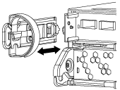
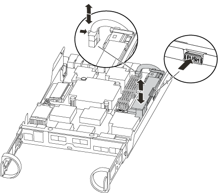

시작하십시오
시작하십시오
NVMEM 배터리-FAS2600을 교체합니다
 변경 제안
변경 제안
-
 이 문서 사이트의 PDF
이 문서 사이트의 PDF
별도의 PDF 문서 모음
Creating your file...
시스템에서 NVMEM 배터리를 교체하려면 컨트롤러 모듈을 시스템에서 분리하고, 배터리를 개봉하고, 배터리를 교체하고, 컨트롤러 모듈을 닫고 교체해야 합니다.
시스템의 다른 모든 구성 요소가 올바르게 작동해야 합니다. 그렇지 않은 경우 기술 지원 부서에 문의해야 합니다.
1단계: 손상된 컨트롤러를 종료합니다
스토리지 시스템 하드웨어 구성에 따라 다른 절차를 사용하여 손상된 컨트롤러를 종료하거나 인수할 수 있습니다.
손상된 컨트롤러를 종료하려면 컨트롤러 상태를 확인하고, 필요한 경우 정상적인 컨트롤러가 손상된 컨트롤러 스토리지에서 데이터를 계속 제공할 수 있도록 컨트롤러를 인수해야 합니다.
노드가 2개 이상인 클러스터가 있는 경우 쿼럼에 있어야 합니다. 클러스터가 쿼럼에 없거나 정상 컨트롤러에 자격 및 상태에 대해 FALSE가 표시되는 경우 손상된 컨트롤러를 종료하기 전에 문제를 해결해야 합니다(참조) "노드를 클러스터와 동기화합니다".
-
AutoSupport가 활성화된 경우 'system node AutoSupport invoke -node * -type all-message MAINT=_number_of_hours_down_h' AutoSupport 메시지를 호출하여 자동 케이스 생성을 억제합니다
다음 AutoSupport 메시지는 두 시간 동안 자동 케이스 생성을 억제합니다: ' cluster1: * > system node AutoSupport invoke - node * -type all-message MAINT=2h'
-
손상된 컨트롤러가 HA 쌍의 일부인 경우 정상 컨트롤러의 콘솔에서 '스토리지 페일오버 수정-노드 로컬-자동 반환 거짓'을 자동 반환하도록 해제합니다
-
손상된 컨트롤러를 로더 프롬프트로 가져가십시오.
손상된 컨트롤러가 표시되는 경우… 그러면… LOADER 메시지가 표시됩니다
컨트롤러 모듈 제거 로 이동합니다.
반환 대기 중…
Ctrl+C를 누른 다음 y를 누릅니다.
시스템 프롬프트 또는 암호 프롬프트(시스템 암호 입력)
정상적인 컨트롤러 'storage failover takeover -ofnode_impaired_node_name_'에서 손상된 컨트롤러를 인수하거나 중단합니다
손상된 컨트롤러에 기브백을 기다리는 중… 이 표시되면 Ctrl-C를 누른 다음 y를 응답합니다.
-
시스템에 섀시에 하나의 컨트롤러 모듈만 있는 경우 전원 공급 장치를 끈 다음 손상된 컨트롤러의 전원 코드를 전원에서 분리합니다.
2단계: 컨트롤러 모듈을 분리합니다
컨트롤러 내의 구성 요소에 액세스하려면 먼저 시스템에서 컨트롤러 모듈을 분리한 다음 컨트롤러 모듈의 덮개를 분리해야 합니다.
-
아직 접지되지 않은 경우 올바르게 접지하십시오.
-
케이블을 케이블 관리 장치에 연결하는 후크 및 루프 스트랩을 푼 다음, 케이블이 연결된 위치를 추적하면서 컨트롤러 모듈에서 시스템 케이블과 SFP(필요한 경우)를 분리합니다.
케이블 관리 장치에 케이블을 남겨 두면 케이블 관리 장치를 다시 설치할 때 케이블이 정리됩니다.
-
컨트롤러 모듈의 왼쪽과 오른쪽에서 케이블 관리 장치를 분리하여 한쪽에 둡니다.

-
캠 손잡이의 래치를 꽉 잡고 캠 핸들을 완전히 열어 미드플레인에서 컨트롤러 모듈을 분리한 다음 두 손으로 컨트롤러 모듈을 섀시에서 꺼냅니다.

-
컨트롤러 모듈을 뒤집어 평평하고 안정적인 곳에 놓습니다.
-
파란색 탭을 밀어 덮개를 연 다음 덮개를 위로 돌려 엽니다.

3단계: NVMEM 배터리를 교체합니다
시스템에서 NVMEM 배터리를 교체하려면 장애가 발생한 NVMEM 배터리를 시스템에서 제거하고 새 NVMEM 배터리로 교체해야 합니다.
-
NVMEM LED 확인:
-
시스템이 HA 구성인 경우 다음 단계로 이동합니다.
-
시스템이 독립 실행형 구성에 있는 경우 컨트롤러 모듈을 완전히 종료한 다음 NV 아이콘으로 식별되는 NVRAM LED를 확인합니다.


시스템을 중단할 때 플래시 메모리에 콘텐츠를 디스테이징하는 동안 NVRAM LED가 깜박입니다. 디스테이징이 완료되면 LED가 꺼집니다. -
완전히 종료하지 않고 전원이 차단되면 NVMEM LED는 디스테이징이 완료될 때까지 깜박인 다음 LED가 꺼집니다.
-
LED가 켜져 있고 전원이 켜져 있는 경우 기록되지 않은 데이터는 NVMEM에 저장됩니다.
이는 일반적으로 ONTAP가 성공적으로 부팅된 후 제어되지 않는 종료 중에 발생합니다.
-
-
-
컨트롤러 모듈에서 NVMEM 배터리를 찾습니다.

-
배터리 플러그를 찾아 배터리 플러그 표면에 있는 클립을 눌러 소켓에서 플러그를 분리한 다음 소켓에서 배터리 케이블을 분리합니다.
-
컨트롤러 모듈에서 배터리를 분리하여 한쪽에 둡니다.
-
교체용 배터리를 포장에서 꺼냅니다.
-
배터리 홀더 측면의 케이블 채널 주위에 배터리 케이블을 감습니다.
-
배터리 홀더 키 보강대를 판금 측면의 "V" 노치에 맞춰 배터리 팩을 배치합니다.
-
측면 벽의 지지 탭이 배터리 팩의 슬롯에 끼워질 때까지 판금 측면 벽을 따라 배터리 팩을 아래로 밀어 넣습니다. 그러면 배터리 팩 래치가 맞물려 측면 벽의 구멍에 딸깍 소리가 납니다.
-
배터리 플러그를 컨트롤러 모듈에 다시 꽂습니다.
4단계: 컨트롤러 모듈을 재설치합니다
컨트롤러 모듈의 구성 요소를 교체한 후 섀시에 다시 설치합니다.
-
아직 설치하지 않은 경우 컨트롤러 모듈의 덮개를 다시 끼우십시오.
-
컨트롤러 모듈의 끝을 섀시의 입구에 맞춘 다음 컨트롤러 모듈을 반쯤 조심스럽게 시스템에 밀어 넣습니다.
지시가 있을 때까지 컨트롤러 모듈을 섀시에 완전히 삽입하지 마십시오. -
필요에 따라 시스템을 다시 연결합니다.
미디어 컨버터(QSFP 또는 SFP)를 분리한 경우 광섬유 케이블을 사용하는 경우 다시 설치해야 합니다.
-
컨트롤러 모듈 재설치를 완료합니다.
시스템이 다음 상태인 경우: 그런 다음 다음 다음 단계를 수행하십시오. HA 쌍
컨트롤러 모듈이 섀시에 완전히 장착되면 바로 부팅이 시작됩니다.
-
캠 핸들을 열린 위치에 둔 상태에서 컨트롤러 모듈이 중앙판과 완전히 맞닿고 완전히 장착될 때까지 단단히 누른 다음 캠 핸들을 잠금 위치로 닫습니다.
커넥터가 손상되지 않도록 컨트롤러 모듈을 섀시에 밀어 넣을 때 과도한 힘을 가하지 마십시오. 컨트롤러가 섀시에 장착되면 바로 부팅이 시작됩니다.
-
아직 설치하지 않은 경우 케이블 관리 장치를 다시 설치하십시오.
-
케이블을 후크와 루프 스트랩으로 케이블 관리 장치에 연결합니다.
독립형 구성
-
캠 핸들을 열린 위치에 둔 상태에서 컨트롤러 모듈이 중앙판과 완전히 맞닿고 완전히 장착될 때까지 단단히 누른 다음 캠 핸들을 잠금 위치로 닫습니다.
커넥터가 손상되지 않도록 컨트롤러 모듈을 섀시에 밀어 넣을 때 과도한 힘을 가하지 마십시오. -
아직 설치하지 않은 경우 케이블 관리 장치를 다시 설치하십시오.
-
케이블을 후크와 루프 스트랩으로 케이블 관리 장치에 연결합니다.
-
전원 공급 장치와 전원에 전원 케이블을 다시 연결하고 전원을 켜서 부팅 프로세스를 시작합니다.
-
5단계: 장애가 발생한 부품을 NetApp에 반환
키트와 함께 제공된 RMA 지침에 설명된 대로 오류가 발생한 부품을 NetApp에 반환합니다. 를 참조하십시오 "부품 반품 및 앰프, 교체" 페이지를 참조하십시오.